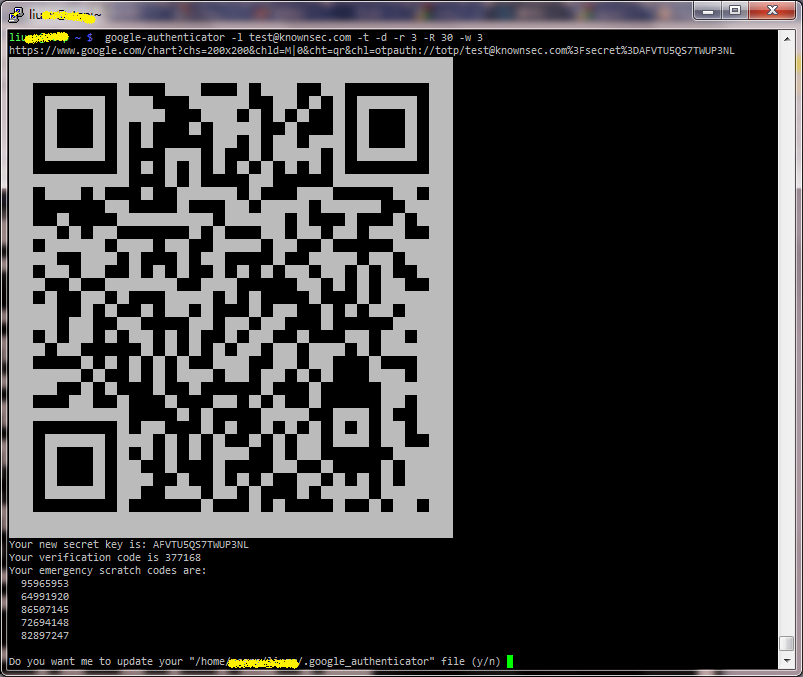

SSH¶
SSH 公钥认证¶
@2012-05-15 新版功能: 创建
简介¶
使用 SSH 登录并管理远程服务器是系统运维之中的常见操作。目前常用的认证方式是 用户名 + 密码。使用密码在某些特定的场合下的缺点是显而易见的，如：
- 在需要多人共用一个帐号的场景下需要将密码告诉所有使用人员，使密码泄漏 的风险增大，并且修改密码也需要通知所有人，带来一定的维护管理成本。
- 某些情况下需要无密码访问（系统可以配置成允许空密码登录，但相应的安全 风险也大增），如 MPI，大批量的服务器维护等。
采用公钥认证则能避免规避单纯使用密码认证带来的这些问题，多人可以通过持有各 自的私钥登录到系统的同一个帐号。用户可以在安全保持私钥的前提下安全的执行无 需输入密码的登录操作。
公钥认证的基本工作原理可以参考任何一本密码学相关的参考书籍， 或者 这里。
接下来的内容就是最常见的 SSH 服务端（OpenSSH）和客户端（OpenSSH 和 PuTTY ） 的配置方法。其他的软件如何配置可以参考其附带的文档，差别应该仅体现在命令 行的使用上。
配置¶
服务端配置¶
OpenSSH 的服务端配置文件一般为 /etc/ssh/sshd_config，和公钥认证有关的两个 配置项是：
#RSAAuthentication yes
#PubkeyAuthentication yes
其缺省值一般为 yes。如果希望仅打开公钥认证，禁用其他的认证方式，则可以修改 下列配置项：
PasswordAuthentication no
ChallengeResponseAuthentication no
UsePAM no
上述配置项如果有任何需要修改的地方在修改之后重启ssh服务器让新的设置生效。
密钥生成¶
在使用公钥认证前需要实现生成相应的公私钥密码对。 OpenSSH 下生成密钥对的命令为：
$ ssh-keygen -C "liuzx@test" -t rsa -b 2048 -f test
Generating public/private rsa key pair.
Enter passphrase (empty for no passphrase):
Enter same passphrase again:
Your identification has been saved in test.
Your public key has been saved in test.pub.
The key fingerprint is:
2f:2e:86:fc:8f:55:82:d2:dd:18:fa:9a:6e:3a:b1:d9 liuzx@test
The key's randomart image is:
+[RSA 2048]-------+
| |
| |
| . |
| . + + |
| . + S o |
| .. . + |
| . * + . |
| * E* . |
| .B*oo |
+-----------------+
更多的参数可以参考 ssh-keygen 的手册页。上面用到的参数分别介绍如下：
- -C 是对密钥的一个说明，有助于区分不同的密钥用途。
- -t 和 -b 分别指定要生成的密钥类型和密钥长度。
- -f 指定生成的密钥对文件名。公钥文件名为 test.pub，私钥为 test。
PuTTY 提供了一个 PuTTYgen 可以用来实现类似 ssh-keygen 的功能。
PuTTYgen 生成的私钥文件一般 save 后的后缀为 .ppk，在这个程序的菜单栏 Conversions 里可以执行和 OpenSSH 的私钥格式之间的相互转换。
客户端配置¶
在完成密钥对的生成后，需要将对应的公钥文件拷贝到服务器上需要登录的用户的 home 目录下的 .ssh/authorized_keys 文件中：
$ cat test.pub >> ~test/.ssh/authorized_keys
对 PuTTYgen 生成的密钥将上图蓝色框内的文本拷贝粘贴到 authorized_keys 文件中 即可。从上面的重定向用的 >> 就可看出我们可以附加任意多个公钥到这个文件 之中（每个公钥占一行）。这样就实现多人以同一个用户的身份登录系统的功能。 如果需要取消某个人的访问权限，只需要删除其对应的公钥即可。
事实上 authorized_keys 文件的准确名字是由 sshd_config 中的 AuthorizedKeysFile 配置指定给定的。同样，man sshd_config 获取详细的说明信息。注意： authorized_keys 文件及其所在的目录以及父目录（一直上溯到该用户的 HOME 目录为止） 的权限必须设置为不能被组和其他人写（可以通过 chmod og-w 确认），否则其他人 只需要修改这个文件即可以以该身份登录到系统上。
authorized_keys 的格式可以参考 man sshd，AUTHORIZED_KEYS FILE FORMAT 这一节。 简单点说，通过配置 authorized_keys 的每一行，可以对不同的用户进行不同的细粒 度的控制。如控制不同用户可以执行的命令，设置环境变量，设置允许登录的主机或 IP 地址等。典型的一个例子就是 git 的管理软件 gitolite。
在 authorized_keys 文件设置好之后，即可以使用公钥认证的方式来登录远程服务器了。
对 OpenSSH 客户端，可以通过 ssh -i test test@remote.host 快速测试是否工作。 更一般的方法是将私钥文件 test 拷贝为 .ssh/id_xxx （xxx 由密钥类型决定， 如 rsa，dsa，ecdsa）。如果不能正常工作，可以 ssh 加上 -v 参数以及查看服 务端的日志来排查可能的原因。注意私钥的权限要求必须只能自己具有读写权限 （通过 chmod og-rwx 确认），否则ssh客户端会拒绝使用该私钥。在有多个密 钥对的情况下，可以通过设置 .ssh/config 对不同的主机和用户使用不同的私 钥文件。如下例：
Host *
IdentityFile ~/.ssh/%r@%h
同样的，更多的细节参考 man ssh_config。
对 PuTTY 客户端，在执行 session 时选择相应的私钥文件即可。
关于密钥的更多说明¶
一般来说生成密钥对时选择 RSA 2048 的强度足够安全了。此外还有dsa 和 ecdsa。 根据 PuTTY 的用户手册，推荐使用 RSA，不建议用 DSA， PuTTY 不支持 ECDSA。
由于在配置了公钥认证的情况下，为方便起见，一般都不设置私钥密码，即只要持有 私钥就可登录系统。因此私钥文件泄漏带来的风险就非常大了。因此，对私钥文件应 仅在可信的环境下才能以无密码的方式存储，其他情况下应该以强密码保护。如果最 初生成密钥是没有设置密码，可以通过 ssh-keygen -p -f test 重新设置密码。对 PuTTY 只需在 Load 私钥后输入密码然后重新保存即可。
幸好，SSH 对这种情况已经有所考虑，并提供了相应的辅助程序做认证代理。OpenSSH 的程序名为 ssh-agent，PuTTY 的程序名为 pageant。其基本思想是预先加载私钥在 内存之中，在记载的过程之中如果私钥有密码，会请求用户输入密码。这样以后的 SSH 连接就不需要频繁的输入私钥的密码。
OpenSSH 下的相应操作如下：
$ eval $(ssh-agent –t 1800)
$ ssh-add .ssh/id_rsa
Enter passphrase for ./ssh/id_rsa:
$ ssh-add -l
2048 f3:65:34:01:24:61:56:94:5d:54:63:44:1e:1a:18:6a .ssh/id_rsa (RSA)
PuTTY 下在执行 pageant 后，在托盘栏会有相应的图标，在右键单击出现的菜单点击 Add Key 按提示操作即可。
结语¶
严格说来，在不可信的环境里不管是采用密码还是公钥任何认证方式都是有风险的。 我们所能作的就是在风险控制和易用性方便权衡选择。
最后，采用公钥认证由于需要私钥文件才能登录，在特殊的情况下，如果没有私钥会 导致无法登陆系统。简单的回到密码认证又规避不了风险。这种情况下，采用 One-time passcodes （ OTP 或者 TOTP ）也许是一种选择。 Google Authenticator 提供了一个很好的实现方案，包括移动客户端。 实现方案参考 SSH OTP 认证 。
P.S. 由于系统配置以及软件版本等的不同，本文中提到的配置并不能覆盖所有的环境。 准确的配置需要参考官方文档并结合实际的系统进行调整。
SSH OTP 认证¶
@2012-05-16 新版功能: 创建
实现方案采用的软件是 Google Authenticator ， 其客户端实现支持 Android，iOS，BlackBerry 系统。
在服务器上执行下面的操作：
$ git clone https://code.google.com/p/google-authenticator/
$ cd google-authenticator/libpam/
$ make
然后分别拷贝 pam_google_authenticator.so 和 google-authenticator 到 /lib/security/ 和 /usr/bin/ 目录。之后编辑 /etc/pam.d/sshd 文件，在该文件的 最前面插入一行：
auth required pam_google_authenticator.so
至此服务端的配置完成。需要注意的是在这个操作之后如果用户没有做公钥认证的配置 会导致用户无法登陆系统。解决办法有多种：基于安全起见可以强制用户在管理员的协 助下配置公钥认证方式登录系统；或者在上面的配置项后设置 pam_google_authenticator.so 的选项为 nullok，这样用户在没有做 OTP 相关的设置 时可以先用密码登录系统来进行相应的操作。
如果 SSH 服务配置了只允许公钥认证，则需要修改 /etc/ssh/sshd_config 文件的配置 项为：
ChallengeResponseAuthentication yes
UsePAM yes
并重启 SSH 服务以支持 OTP 和密码认证。
客户端需要每个用户登录到系统之后进行相关的配置。用户可以直接输入 google-authenticator 后按提示操作即可，或者直接用下面的命令：
$ google-authenticator -l test@knownsec.com -t -d -r 3 -R 30 -w 3
google-authenticator -h 能看到可用的参数。上面命令用到的参数解释如下：
- -l 设置移动设备上的程序对应的 OTP 码的标签，便于区分不同的应用。
- -t 设置采用基于时间的验证。相应的也可以 -c 参数采用基于计数的验证。
- -d 禁止重用基于时间的验证码
- -r 限制登录频率
- -R 设置登录频率限制的时间间隔
- -w 设置时间窗的大小，主要在移动设备的时间不是准确同步的情况下比较有用
如果系统安装了 qrencode 软件，google-authenticator 可以直接输出一个二维码供 移动设备扫描录入（见下图），否则用户需要根据其输出来手工进行相应的设置。
{kind=link}
剩下的就是验证测试，祝顺利!
P.S. 由于系统配置以及软件版本等的不同，本文中提到的配置并不能覆盖所有的环境。 准确的配置需要参考官方文档并结合实际的系统进行调整。
P.P.S. 显然，本文中提到的 OTP 认证并不局限于 SSH，其他任何支持 PAM 认证方式的 软件也都可以使用。
SSH SOCKS 代理¶
作 socks 代理
- ssh -D [bind_address:]port user@host
SSH 端口转发/隧道¶
@2010-08-02 新版功能: 创建
在 @2019-01-21 版更改: 增加详细说明
在 @2019-02-13 版更改: 增加纯转发参数，不要 PTY
SSH 端口转发可以通过 SSH 隧道将数据由客户端（端口或 Unix Socket）转发到服务端 （指定主机的指定端口或服务端上的 Unix Socket）（-L 参数），或者反过来（-R）。
本地端口转发：将数据通过 SSH 由客户端端口（port）转发到 SSH 服务端（rhost）， 然后服务端转发数据到指定主机（host）的指定端口（hostport）。host 是 ip 地址 或服务端可以解析到的主机名。客户端和服务端端口也可以是 Unix socket。
- ssh -L [bind_address:]port:host:hostport user@rhost
- ssh -L [bind_address:]port:remote_socket user@rhost
- ssh -L local_socket:host:hostport user@rhost
- ssh -L local_socket:remote_socket user@rhost
安全起见，本地端口最好仅绑定在 127.0.0.1 上，否则其他能访问到客户端 设备的该端口的任何人都可以访问到远端的对应服务。-L 参数可以指定多个， 这样可以实现多个端口转发。
远端端口转发：和本地端口转发相反。将服务端的数据转发到客户端，然后客户端 转发数据到指定主机（host）的指定端口（hostport）。host 是 ip 地址或 客户端可以解析到的主机名。客户端和服务端端口也可以是 Unix socket。
- ssh -R [bind_address:]port:host:hostport user@rhost
- ssh -R [bind_address:]port:local_socket user@rhost
- ssh -R remote_socket:host:hostport user@rhost
- ssh -R remote_socket:local_socket user@rhost
GatewayPorts 的配置会影响 bind_address 的可选值：
- no 缺省值，bind_address 无意义，永远绑定在 localhost 上
- yes 强制绑定在 0.0.0.0 上，任何人都可以访问该端口
- clientspecified 此时 clientspecified 才有意义， 可以指定允许访问该端口的地址。
sshd 相关配置选项：
GatewayPorts [yes|no|clientspecified]
AllowTcpForwarding [yes|no|all|local|remote]
AllowStreamLocalForwarding [yes|no|all|local|remote]
如果只用 SSH 做端口转发，可以给 ssh 增加如下几个参数：
- -n：redirect stdin from /dev/null, 也就是没有 stdin
- -N：do not execute a remote command
- -T：不分配 PTY